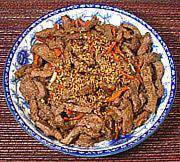

|
Beef with ChilisKorea - Soegogochubokkum | ||||
| Serves: Effort: Sched: DoAhead: |
4 side ** 1-3/4 hrs Yes |
A light beef dish with good Korean flavor - easy to make. It's a bit simple to stand alone as a main dish but can serve as an appetizer or combine it with other sides and rice as would be done in Korea. | |||
|
1 ------ 1 2 1/2 2 1 ------ 3 3 1-1/2 ------ 1/2 |
# --- T T T t --- cl T -- T |
Beef, lean -- Marinade Scallion (all) Soy Sauce Sesame Oil dark Rice Wine (1) Sugar (optional) --------- Garlic Red Chili (2) Oil -- Garnish Sesame, toasted (3) |
Prep - (1-1/4 hrs - 20 min work)
|